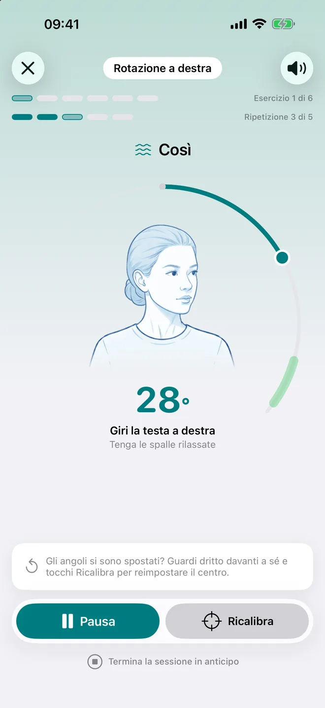
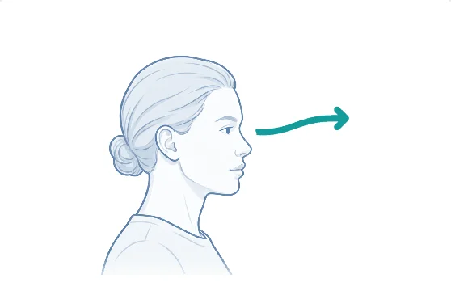
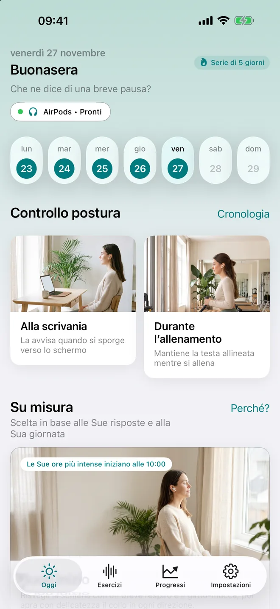
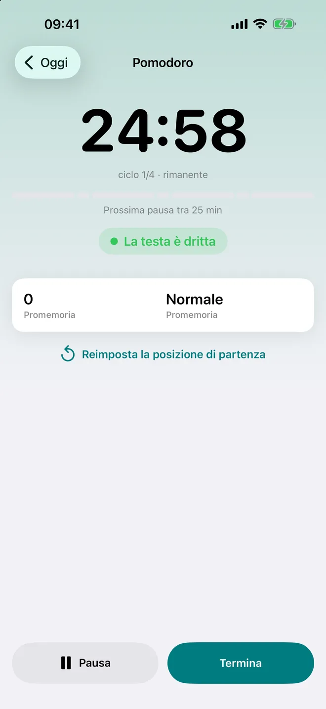

Collo
Rotazioni, inclinazioni laterali, sguardo in basso e in alto, retrazione del mento. Gli AirPods misurano l’angolo e contano le ripetizioni; senza, Nodly scandisce il ritmo con un timer.
Brevi esercizi per collo, respirazione, occhi, mani e gambe, e yoga alla scrivania. Con gli AirPods, Nodly misura i movimenti del collo, segue la postura e La avvisa quando la testa resta abbassata troppo a lungo.
Scarica su App StorePer iPhone e iPad · Con AirPods compatibili o senza

Non solo il collo
Rotazioni, inclinazioni laterali, sguardo in basso e in alto, retrazione del mento. Gli AirPods misurano l’angolo e contano le ripetizioni; senza, Nodly scandisce il ritmo con un timer.

Espirazione lunga, respirazione quadrata e respirazione regolare, per 1, 2 o 3 minuti, guidate da un disegno e da una leggera vibrazione.

Una pausa di due minuti lontano dallo schermo: guardare lontano, sbattere lentamente le palpebre, poi riposare a occhi chiusi.

Allungamenti dei polsi, circonduzioni e apertura e chiusura delle mani, per le giornate passate a tastiera e mouse.

Sollevamento dei talloni e delle punte, estensione del ginocchio e marcia da seduti, senza alzarsi dalla sedia.

Gatto-mucca, piegamento laterale e torsione da seduti, più movimenti per le spalle per sciogliersi tra una riunione e l’altra.
Solo il rilevamento del collo usa gli AirPods. Tutto il resto funziona senza.
Misurato con gli AirPods
I sensori di movimento degli auricolari seguono l’angolazione della testa. Quando raggiunge l’intervallo obiettivo, Nodly La avvisa con un suono e una vibrazione e conta la ripetizione per Lei. Gli obiettivi si adattano alla Sua mobilità.
Nodly usa i sensori di movimento degli auricolari. Nessuna fotocamera, nessun dispositivo in più.
Guardi dritto davanti a sé e resti immobile per qualche secondo. Nodly la considera 0°.
Quando raggiunge l’intervallo obiettivo, Nodly La avvisa con un suono e una vibrazione e conta la ripetizione per Lei.
0°
Destra
Trascini verso destra fino all’intervallo verde, poi torni al centro.
Ripetizioni: 0


Controllo postura
Segue la testa mentre lavora, da 30 minuti a 2 ore, oppure in cicli Pomodoro di 25 minuti di lavoro e 5 di pausa.
Se la testa si abbassa durante gli esercizi in piedi, Nodly La avvisa in pochi secondi. Per gli esercizi da sdraiati, basta metterlo in pausa.
Blocchi il telefono e continui a lavorare. Vede il tempo rimanente nella schermata di blocco e da lì può mettere in pausa o terminare.
Con Siri, dal Centro di Controllo o con un’automazione Full immersion in Comandi Rapidi.
“Avvia il Controllo postura con Nodly”
Routine
Parta da una routine pronta come Buon inizio o Pausa dallo schermo, oppure scelga i movimenti dalla raccolta e li metta nell’ordine che preferisce. Nella schermata Oggi, Su misura Le suggerisce quella più adatta alla Sua giornata e alle ore più intense.
Progressi
La serie, la settimana e come il tempo si divide tra collo, respirazione, occhi, mani e gambe, a colpo d’occhio. E mentre si esercita, una piccola scrivania in 3D si riordina da sola.
I dettagli
Cronologia e routine si sincronizzano tra iPhone e iPad tramite il Suo iCloud.
Gli esercizi per il collo possono seguire un timer. Gli altri esercizi non richiedono mai gli AirPods.
Un promemoria quotidiano, pause alla scrivania nelle ore più intense e un riepilogo settimanale, tutti facoltativi.
Indicazioni vocali, suoni e vibrazioni La guidano, così lo sguardo può restare lontano dallo schermo.
Testo dinamico, VoiceOver e Riduci movimento, su iPhone e iPad.
Italiano, inglese, turco, tedesco, spagnolo, francese, portoghese, olandese, russo, giapponese, coreano e cinese (semplificato e tradizionale).
Privacy e fiducia
I dati di movimento vengono elaborati sul telefono e i dati grezzi non vengono mai archiviati. Non serve alcun account.
I movimenti devono risultare lenti e comodi. Se qualcosa non va, si fermi subito. Nodly non La spinge mai oltre.
Nodly è un’app per il benessere; non diagnostica né cura alcuna condizione. Se ha un problema al collo, si rivolga a un professionista sanitario prima di iniziare.
Note legali
Nessun account, e i dati di movimento restano sul dispositivo. Raccogliamo statistiche d’uso anonime solo se Lei lo consente. Niente pubblicità, niente tracciamento, nessuna vendita di dati.
Leggi il testo completoNodly è offerta con un abbonamento mensile o annuale, e gli utenti idonei hanno 7 giorni di prova gratuita. Può annullare in qualsiasi momento nelle impostazioni del Suo account App Store.
Leggi il testo completoSi muova lentamente e solo entro un’ampiezza comoda. Si fermi subito in caso di dolore, capogiri o intorpidimento.
Leggi il testo completo